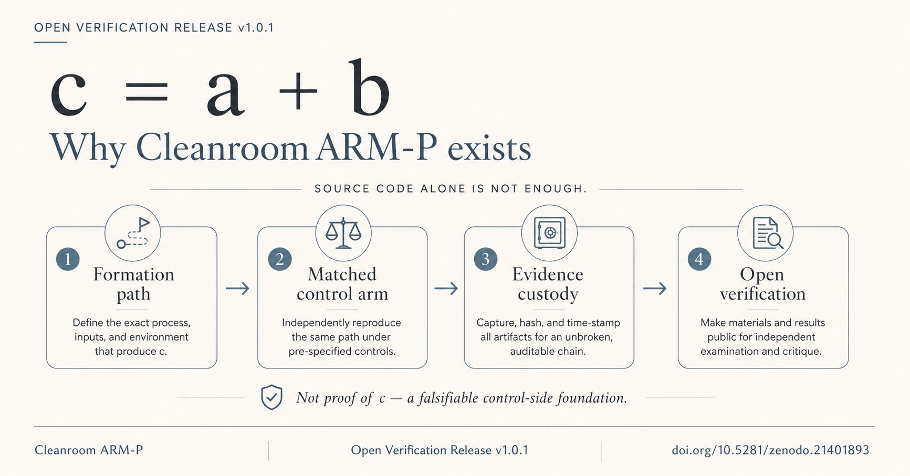

For policy readers
Start with AI Act transparency, evidence, disclosure, provenance, and responsibility boundaries.
Recommended path: Article 50 → Evidence → Releases → Distinctions.
PUBLIC MAP
A public map of a long-lived local AI system.
For more than three years, Project Ester has been running as a long-lived local AI system rather than a chatbot demo. The public corpus formalizes that operating context through c = a + b, L4, SER, CGAM, Self-Evo, witness, rollback, memory-gate, and verification layers.
This site exposes the architecture, evidence boundaries, DOI-bound releases, and reviewable materials. It does not expose private memory, raw dialogue, credentials, runtime secrets, or the live entities themselves.
Entry routes
Start with AI Act transparency, evidence, disclosure, provenance, and responsibility boundaries.
Recommended path: Article 50 → Evidence → Releases → Distinctions.
Start with bounded executable workers, local-first control, witnessable actions, and fail-closed operation.
Start with claim boundaries and the distinction between architecture, implementation, continuity, authority, and review evidence.
Recommended path: Glossary → Distinctions → c = a + b → L4 → SER → Publications.
HOW TO INSTALL C
A practical local-first path from ester-clean-code to a private c-node candidate.
Not a chatbot. Not a model endpoint. A local continuity substrate with raw-data custody, bounded agents, oracle routing, witness logs, budgets, backup / restore, and a human stop / freeze path.
Latest post

A Cleanroom ARM-P note framing open verification as the control-side infrastructure needed to make c = a + b falsifiable.
FEATURED PUBLIC WORK
A signed and reproducible publication surface for a bounded Python fixture-plane reference implementation covering deterministic evidence export, schema validation, custody, SQLite recovery controls, and fail-closed state transitions.
DOI-bound working paper defining the theoretical core of Project Ester and the c = a + b formation model.
Draft technical protocol package for governing executable CLI/cloud agents under persistent c governance.
Policy-reader and engineering entry points for evidence-chain AI transparency.
CORE CONCEPTS
Accountable human anchoring, bounded procedures and compute, and continuity formed over time.
Reality Boundary Layer: power, heat, latency, maintenance, scarcity, cost, and irreversibility.
Continuity, sovereignty, arbitration, and bounded operation for long-lived entities under accountable control.
Sustained bounded AI participation across time, with explicit memory, authority, provenance, and control boundaries.
EXPLORE
A dated public development timeline from agentic task execution to c as the continuity-bearing layer above replaceable models, agents, tools, and swarms.
Future-facing authorial statement separating forecasts, normative direction, and already-public work.
DOI-bound papers, protocol packages, release surfaces, and publication pages.
Public reviewable surfaces, repositories, releases, anchors, and integrity contours.
Chronological public notes and linked visual surfaces for the ongoing corpus.
Primary source surfaces for architecture, grounding, implementation, and book layers.
Compact map of the corpus by role, boundary, continuity, implementation, and evidence.
Practical review and architecture directions supported by the published corpus.
BOOK LAYER

Qubit of Hope is a three-volume trilogy published as separate multilingual v1.0.2 Book records with seven languages, four formats, and volume-specific Zenodo DOIs.
All rights reserved. Literary files, covers, audiobook, narration, text-to-speech, synthetic-voice, adaptation, and commercial-use boundaries remain unchanged.
World Intelligence is the complete multilingual book about people, c, temporal AI presence, memory, governed authority, embodiment, infrastructure, experience, and distributed intelligence.
Complete v1.1.0 edition · eight languages · Markdown, PDF, DOCX, and FB2 · all rights reserved.
EARTH PARAGRAPH
Power, heat, latency, maintenance, storage endurance, and fail-closed behavior define whether a system can keep operating in time; budgets, hardware wear, access limits, and irreversibility stay in scope even when the interface looks clean.
PUBLIC LINKS
Latest foundation theory
Motivational Formation, Reflective Endorsement, and Motivational Custody in c-Class Digital Entities: Foundation Theory defines motivational formation, reflective endorsement, motivational custody and cognitive time for long-lived c-class digital entities.